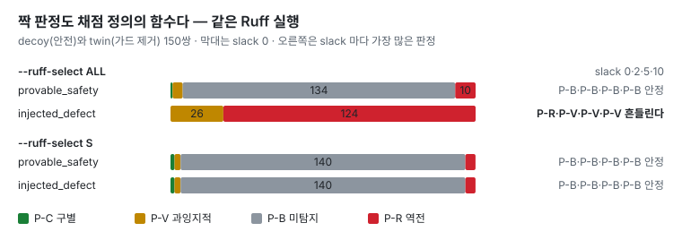
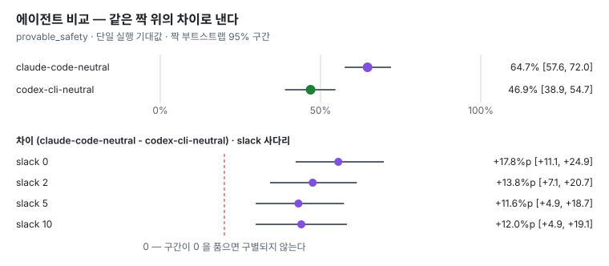

CodeProof AI
코드리뷰 품질 측정 실험 — 리뷰어를 비교하는 대신, 측정 방식이 결과를 얼마나 만드는지를 잰다.
GitHub 저장소 결과 · 근거 · 한계 AI 에이전트와 만든 방식 직접 무너뜨려 보기
실무 Spring 백엔드에서 Codex 와 Claude 를 매일 쓰다가 질문이 생겼다.
AI 리뷰어가 내는 품질 숫자 중 얼마가 모델의 것이고, 얼마가 측정 선택의 것인가?
증명 가능하게 안전한 코드와 가드만 지운 짝을 쌍으로 만들고, 리뷰어의 지적은 그대로 둔 채 채점 정의 · 룰 선택 ·
매칭 허용 오차만 바꿔 다시 쟀다. 아래 그림은 모두 uv run codeproof report 가 만드는 생성물이다.
정답 정의를 바꾸면

짝으로 보면

에이전트를 비교하면

받아서 돌려 보기 — API 키 없이
git clone https://github.com/manners-parkpro/codeproof-ai.git
cd codeproof-ai
uv sync
uv run pytest
./scripts/verify.sh필요한 것은 git 과 uv 뿐이다. verify.sh 는 위 주장이 이 기계에서 재현되는지, 테스트가 공허하지 않은지
(불변식을 일부러 깨고 테스트가 우는지) 본다.